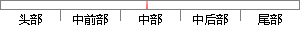

传统的交易系统无法实现完全不可逆的交易，因为第三方机构不可避免的会产生分歧。
片段位置图

相似结果|
1
原句片段：传统的交易系统无法实现完全不可逆的交易，因为第三方机构不可避免的会产生分歧。
相似片段 1：需要第三方支持的点对点电子现金支付系统是没有价值的”这容易和传统上的...我们无法实现完全不可逆的交易,因为金融机构总是不可避免地会出面协调争端...
相似片段 2：人们无法实现完全不可逆的交易,因为金融机构总是不可避免地会出面协调争端。而...如果想要在电子系统中排除第三方中介机构,那么交易信息就应当被公开宣布(publicly ...
相似片段 3：我们无法实现完全不可逆的交易,因为金融机构总是不可避免地会出面协调争端...如果想要在电子系统中排除第三方中介机构,那么交易信息就应当被公开宣布(...
相似片段 4：人们无法实现完全不可逆的交易,因为金融机构总是不可避免地会出面协调争端...如果想要在电子系统中排除第三方中介机构,那么交易信息就应当被公开宣布,...
相似片段 5：我们无法实现完全不可逆的交易,因为金融机构总是不可避免地会出面协调争端。而...如果想要在电子系统中排除第三方中介机构,那么交易信息就应当被公开宣布(publicly ...
相似片段 6：比特币的出现就是要干掉这个第三方,对比这个传统基于...实现完全不可逆转交易是不太可能的,因为金融机构需要...不可逆的交易能保证卖方免受欺诈,常规的托管机制可以...
相似片段 7：我们无法实现完全不可逆的交易,因为金融机构总是不可避免地会出面协调争端。而金融中介的存在,也会增加交易的成本,并且限制了实际可行的最小交易规模,...
|
※ 片段修改建议 ※
近似词参考：- 无法：没法
- 完全：彻底 完整
- 不可：不成 不行 弗成
- 交易：买卖 生意业务
- 因为：由于
系统自动生成语句：传统的买卖系统没法实现彻底不成逆的买卖，由于第三方机构不成避免的会产生分歧。
注：本片段修改建议为系统自动生成，仅供参考。